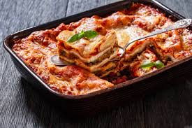

Home
Lasagna

Description
This is the best homemade lasagna you'll ever try. Layers of cheesy, meaty goodness that the whole family will love.
Ingredients
- 1 pound ground beef
- 1 onion, chopped
- 2 cloves garlic, minced
- 1 (28 ounce) can crushed tomatoes
- 12 lasagna noodles
- 16 ounces ricotta cheese
- 3 cups shredded mozzarella cheese
- Salt and pepper to taste
Steps
- Preheat oven to 375°F (190°C).
- Cook ground beef, onion, and garlic until browned.
- Add crushed tomatoes and simmer for 20 minutes.
- Boil lasagna noodles.
- Layer sauce, noodles, ricotta, and mozzarella.
- Repeat layers and finish with mozzarella.
- Bake for 30–40 minutes until bubbly.